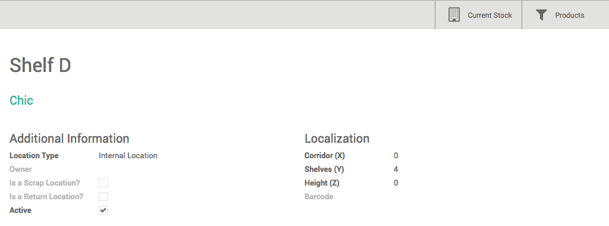

配置
创建新库位
为了能创建一个新的库位，你需要能让系统进行多库位管理。在**库存**模块中，打开菜单：[UNKNOWN NODE title_reference]。在**库位＆仓库**的地方选择**仓库进行多库位管理**，然后点击**应用**。

在**库存**模块中，打开：[UNKNOWN NODE title_reference]，在库位窗口下，点击**创建**。
在**库位名称**字段键入库位的名称。并在列表中选择**父库位**。父库位可以是一个物理库位或者虚拟库位，然后你可以按照需要添加足够多的下级库位。
你还可以在**额外信息**字段输入并为该库位添加一段描述。
完成后, 点击 保存.
注解
一个仓库和一个库位对应，因为库位是分级的，YuanCloud会自动的创建一个仓库的父库位，随后所有的库位在该库位下。
参见
[UNKNOWN NODE problematic]
- 如何创建一个新的仓库